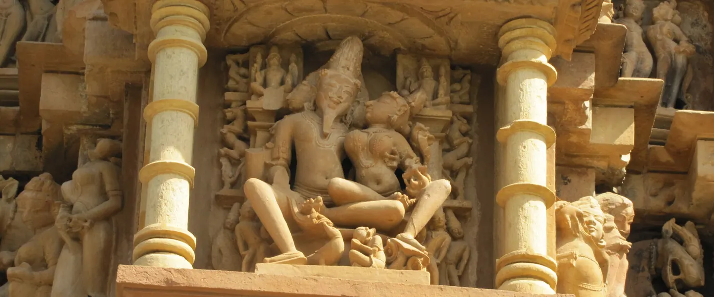

Ancient India
Culture · community
Diversity in scripture and stone
Shikhandi in the Mahabharata, Ardhanarishvara, and later the carvings at Khajuraho (around 950 to 1050 CE).
Three threads running side by side for two thousand years. Filter by theme, then scroll.

Shikhandi in the Mahabharata, Ardhanarishvara, and later the carvings at Khajuraho (around 950 to 1050 CE).
British colonial rulers criminalise "carnal intercourse against the order of nature."
Shows same-sex attraction is far more common than assumed.
Experts can't tell gay and straight men apart on psychological tests.
Riots after a police raid spark the modern global pride movement.
No longer a mental disorder in the American diagnostic manual.
One of the first Indians to talk openly about being gay in the press; he later founds Bombay Dost (1990) and the Humsafar Trust (1994).
On 17 May, now the International Day Against Homophobia, Biphobia and Transphobia.
A small group walks in Kolkata in the Friendship Walk.
The petition that starts India's long legal battle.
Manvendra Singh Gohil of Rajpipla becomes the first Indian royal to come out publicly.
Naz Foundation v. Government of NCT of Delhi decriminalises consensual same-sex relations.
Suresh Kumar Koushal v. Naz Foundation reinstates 377.
Transgender people recognised as a third gender, with the right to self-identify.
Puttaswamy names sexual orientation as an essential part of privacy.
A five-judge bench decriminalises same-sex love. The Indian Psychiatric Society says homosexuality is not an illness.
The sprinter becomes India's first openly gay elite athlete.
477,522 people. No single gay gene, but many small genetic influences.
Prohibits discrimination against transgender people.
S. Sushma v. Commissioner of Police orders protections for queer people and action against conversion therapy.
The National Medical Commission tells all state councils.
Supriyo Chakraborty v. Union of India: the Supreme Court declines to legalise same-sex marriage, leaving it to Parliament.
Introduces medical-board verification, narrows the legal definition, adds tougher penalties for some crimes. The government says it targets welfare and prevents coercion; activists say it removes self-identification recognised in NALSA. Protests took place nationwide and legal challenges are expected.